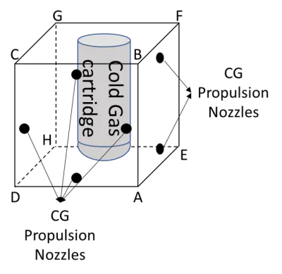

Robot Design

Shape
The robot chassis is shaped like a cube for sake of symmetry, which is really important to ensure ease of motion and rotation.
Propulsion Mechanism
The robot uses high pressure cold gas propulsion for both linear motion and rotation. The robot chassis has 12 nozzles (only 6 shown in the picture) for expelling high pressure cold gas, which help it both move linearly and rotate as needed.
Fuel
The robot uses an inert cold gas like Nitrogen or Carbon Dioxide because they are harmless to humans and nearly all equipment. The specific impulse is approximately 70 seconds, which means that for every 1 gram of gas expelled the robot is able to generate 0.68 N of thrust.
Fuel Tank
The fuel tank is made of metal capable of storing the cold gas under high pressure, typically 50 atmospheres or more. The tank design allows for easy screw-on, screw-off design for ease of refueling.
Nozzle Control
Nozzle operation is controlled by an actuator which in turn is controlled by the robot master controller.
Robot Master Controller
The robot controller is a combination of Arduino and Raspberry Pi controllers which control all the sensors and actuators within the robot. This controller is also responsible for external communication.